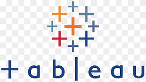

Hello, I'm Gaurav Sharma
Web Developer | Designer | Creative Thinker
Download Resume
I’m passionate about building modern, animated websites that not only look stunning but also provide seamless user experiences. With a strong foundation in web development and design, I enjoy blending creativity with technology to craft digital solutions that stand out. Whether it’s coding responsive layouts, integrating smooth animations, or optimizing performance, I thrive on turning ideas into reality. My journey in tech has taught me the value of continuous learning, and I’m always exploring new tools and techniques to push the boundaries of what’s possible on the web.

The study of the structure, function, evolution, and mapping of genomes. It involves analyzing DNA sequences and understanding gene expression, mutations, and interactions to gain insights into genetic disorders, evolution, and biotechnology applications.
Intellectual Property (IP) training focuses on understanding the legal rights related to inventions, patents, copyrights, trademarks, and trade secrets. It equips professionals with the knowledge to protect and commercialize innovations and ensure compliance with IP laws.

A computational technique used to predict how molecules (such as drugs or ligands) interact with a target protein or receptor. It’s widely used in drug discovery and design to identify potential therapeutic compounds by evaluating their binding affinity and orientation.

Refers to various hands-on methods and procedures used in scientific research, such as PCR, electrophoresis, Western blotting, enzyme assays, and microscopy. These techniques are crucial for experimenting and analyzing biological samples in molecular biology, biochemistry, and biotechnology.

The process of inspecting, cleaning, transforming, and modeling data to uncover useful information, draw conclusions, and support decision-making. In biotechnology, it often involves interpreting large datasets from experiments or genomics and applying statistical or machine learning methods.

A technique used for separating, identifying, and quantifying components in a mixture. HPLC is widely used in the biotechnology and pharmaceutical industries for analyzing proteins, small molecules, and other biomolecules, ensuring purity and quality control.

The process of planning, organizing, and overseeing the completion of a project. In biotechnology, it includes managing timelines, resources, budgets, and teams to achieve specific research or development goals while ensuring compliance with regulations and quality standards.
A suite of software products by Microsoft, including tools like Excel, Word, PowerPoint, and Teams. In biotechnology, these tools are used for data analysis, documentation, communication, and collaboration in research and project management.
A suite of software products by Microsoft, including tools like Excel, Word, PowerPoint, and Teams. In biotechnology, these tools are used for data analysis, documentation, communication, and collaboration in research and project management.

A suite of software products by Microsoft, including tools like Excel, Word, PowerPoint, and Teams. In biotechnology, these tools are used for data analysis, documentation, communication, and collaboration in research and project management.

A suite of software products by Microsoft, including tools like Excel, Word, PowerPoint, and Teams. In biotechnology, these tools are used for data analysis, documentation, communication, and collaboration in research and project management.

A suite of software products by Microsoft, including tools like Excel, Word, PowerPoint, and Teams. In biotechnology, these tools are used for data analysis, documentation, communication, and collaboration in research and project management.